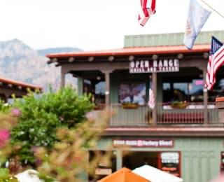
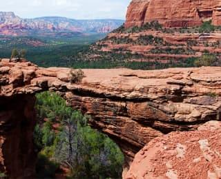

Седона - удивительное рядом

Седона — небольшой городок в Аризоне, заслуживающий большего!
Рассмотрим 5 причин, по которым Седона круче, чем гранд каньон!
Преимущества и рекомендации
Преимущества
Настоящий городок
— №1 —
Седона не аттракцион для туристов, там течет своя жизнь
 Рекомендации
Жилье
Рекомендуем пожить в настоящем мотеле, всё как в кино!
Сувениры
Не только китайского,
но и местного производства!Еда
Всегда заказывайте фирменный бургер, Вы не разочаруетесь!
Преимущества-продолжение
Там есть Мост дьявола
— №2 —
Да, по нему можно пройти! Если вы осмелитесь, конечно
 Небольшая площадь
— №3 —
Все интересные места находятся
очень близкоКрасивая дорога
— №4 —
Ехать в Седону из Лас-Вегаса
совсем не скучно!Мало туристов
— №5 —
Большинство едет в Гранд Каньон
и толпится там
Поиск гостиницы в Седоне
Заинтересовались?
Укажите предполагаемые даты поездки,
и мы покажем вам лучшие предложения гостиниц в Седоне